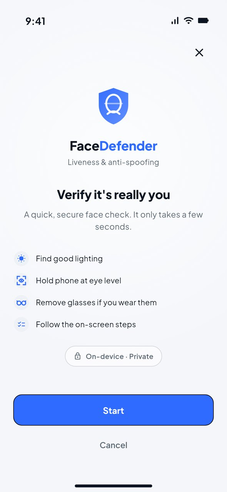
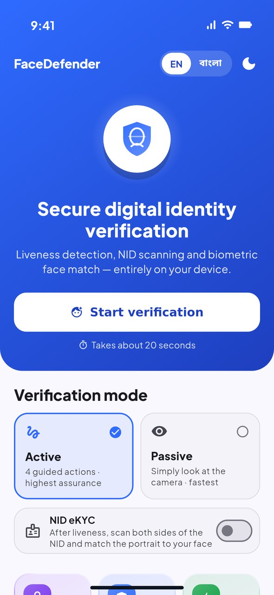
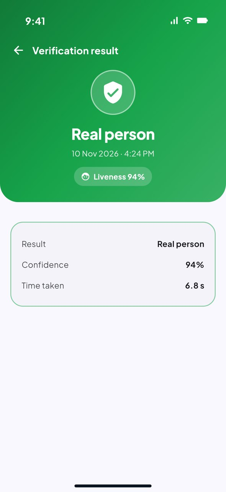
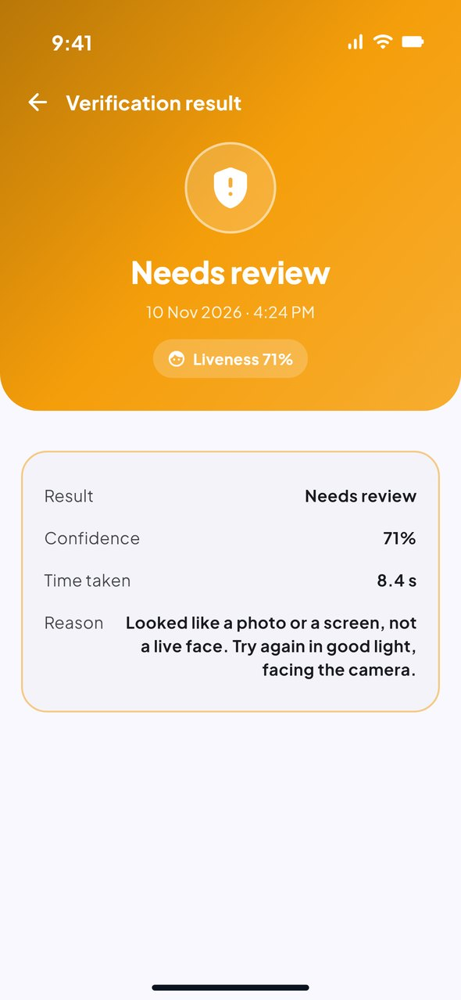
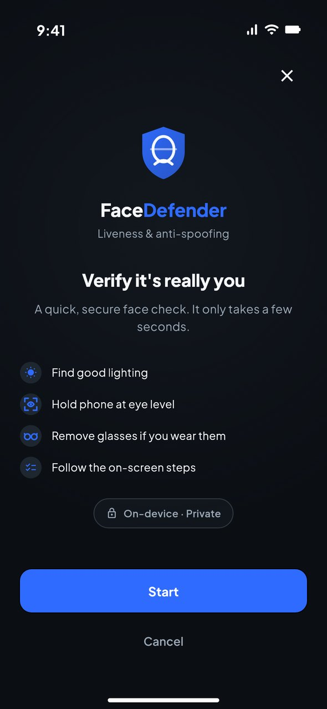
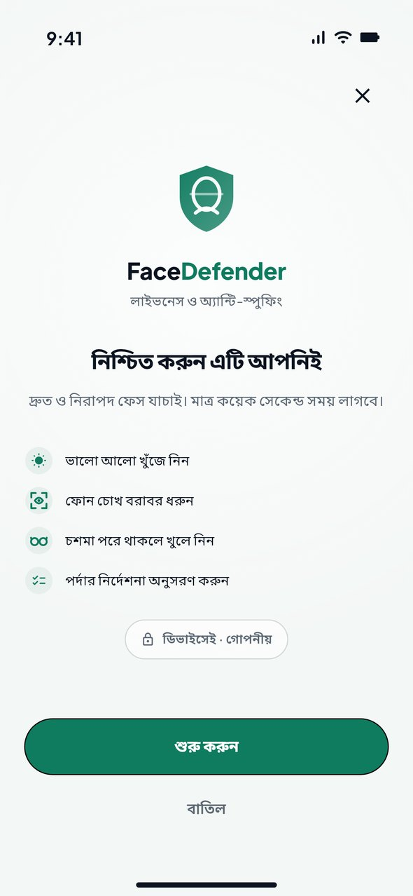

Verify it's really them.
Face Defender confirms that a real, live person is in front of the camera, and stops printed photos, screen replays and recorded videos, entirely on the phone. Add it to your Android and iOS app in a few lines of Flutter code.
For banking, fintech, wallet and eKYC apps. No per-check fees, no face images leaving the device.


Photos and replays don't pass.
Random live challenges plus on-device presentation-attack detection catch the usual tricks.
Verified in seconds.
About 5 seconds in passive mode, or about 20 seconds with four short prompts.

Built for the people on both sides of the camera.
For your customers
- Fast, guided check. About 5 seconds passive, or about 20 with 4 short prompts.
- Live hints, one at a time. "Move a little closer", "Too dark"; the face oval turns amber, then green.
- Spoken prompts. Turn, blink and smile instructions read aloud on-device, in English and Bangla.
- Private by design. Camera frames are processed in memory, never saved or uploaded by default.
- NID eKYC add-on. Scan both sides of the national ID; the portrait is matched to the live selfie.
- Calm recovery. Clear retry paths for no face, timeouts and a denied camera permission.
For the bank or app owner
- Replay-resistant liveness. Every session gets a fresh random challenge order.
- On-device anti-spoofing. Passive PAD model plus depth and screen-artifact cues, in hybrid, active or passive mode.
- Device integrity checks. Flags emulator, root/jailbreak, virtual camera, screen capture and debugger.
- Structured results. Verified, suspicious, failed, cancelled or error, with risk score, confidence and reason.
- No per-check cost. No paid APIs and no mandatory backend; the core check works offline.
- Modular. Swap the face detector, anti-spoof model, licence check or backend without breaking your app.
Face images never leave the phone.
Everything runs on the device, with no paid APIs and no mandatory backend. Only a structured, non-biometric result leaves the SDK.
- 100% on-device processing
- Works offline
- No per-check fees
- Nothing stored by default

Your brand. Your language.
Your colours, logo and button shape, with light and dark themes and full Bangla built in.

Integrate in minutes.
A small, clean public API. Initialise once, start a verification, and act on a typed result.
- Flutter package for Android and iOS
- Theme, wording and risk thresholds per customer
- Optional backend adapter for server-side checks
await FaceDefender.initialize( configuration: FaceDefenderConfig(license: myLicense), ); final result = await FaceDefender.startVerification(context); switch (result.status) { case VerificationStatus.verified: // proceed case VerificationStatus.failed: // deny or retry case VerificationStatus.suspicious: // step-up review case VerificationStatus.cancelled: // user aborted case VerificationStatus.error: // see errorCode }
Common questions
Does it need an internet connection or a server?
No. The core liveness and anti-spoof check runs fully on the device and works offline. A backend adapter is available if you want server-side checks too.
Are face images stored or uploaded?
Not by default. Camera frames are processed in memory, and only a structured, non-biometric result leaves the SDK.
Which platforms does it support?
Android and iOS, through a Flutter package.
Can it match a selfie to a national ID card?
Yes, with the NID eKYC add-on: the user scans both sides of the card and the portrait is matched to the live selfie.
Does it detect deepfakes?
Not reliably with the built-in models. Deepfake and AI-generated-face detection needs a plug-in PAD model, which the SDK's modular design supports. No liveness system is 100% accurate, and we're upfront about that.
See Face Defender in your app's flow.
A free live demo on a real phone: passive and active checks, spoof attempts, and the NID eKYC add-on.
WhatsApp: +880 1799-438398